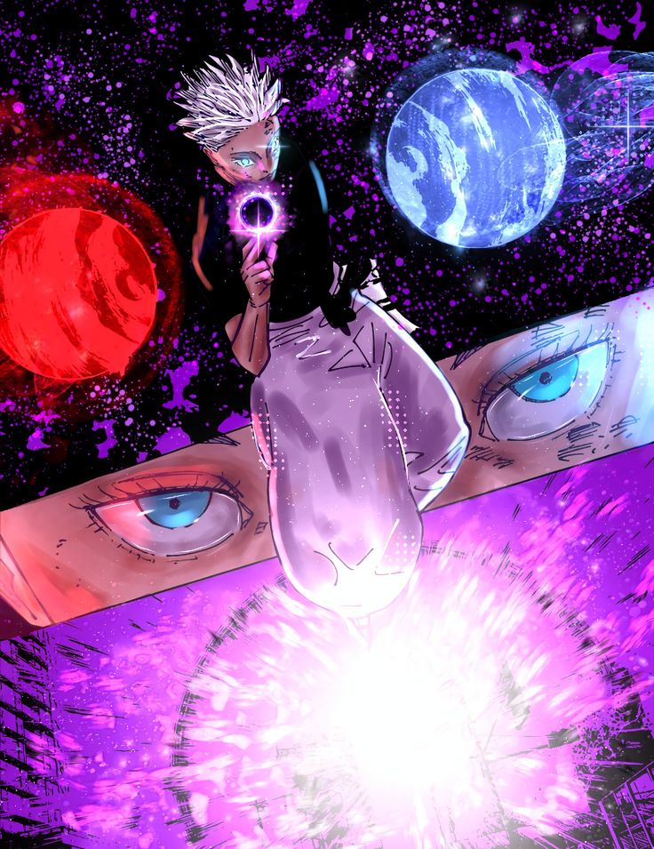
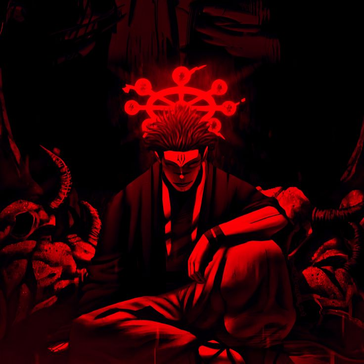
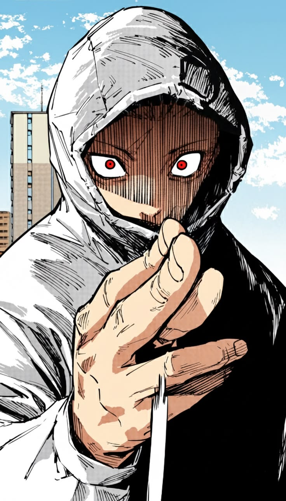

Favoritos

Gojo
Gojo Satoru é um dos personagens mais importantes de Jujutsu Kaisen e um dos feiticeiros mais poderosos da história.

Sukuna
Ryomen Sukuna é conhecido como o Rei das Maldições e possui um dos maiores poderes da obra.

Itadori
Yuji Itadori é o protagonista de Jujutsu Kaisen, conhecido por sua força e determinação.

Yuta Okkotsu
Yuta Okkotsu é um dos feiticeiros mais poderosos de Jujutsu Kaisen.

Toji Fushiguro
Toji Fushiguro é um dos personagens mais marcantes do anime e mangá Jujutsu Kaisen.

Getou Suguru
Geto Suguru é um dos principais antagonistas do anime e mangá Jujutsu Kaisen.